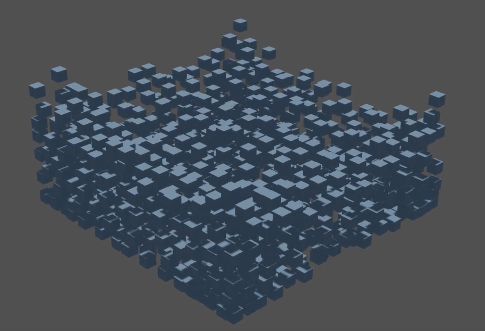

|

|
We were originally planning on using project 4's renderer for the fluid simulation, but we found that generating a real time simulation was infeasible with the way we wanted to simulate the fluid. We decided to use Blender as it provides an easy way to record the position of each particle at each frame.
So far, we have compiled the mathematical components we need to fully implement a model of the fluid. We have modeled the particles as spheres with properties such as pressure, density, velocity, position, and mass. We have fully coded the external forces (gravity), collision with the walls of the scene's bounding box, pressure forces, and viscosity forces. In order to quickly compute the pressure and density, we created a simple spatial map that contains a list particles in a specific grid location. We set up a scene where particles would be arranged in a grid-like formation and dropped into a bounded box where the particles would be able to interact with each other.
We are pretty close to our planned schedule as we were able to include many of the forces that we wanted to model such as the pressure and viscosity forces. We were able to fix the issue where particles could get stuck on the bounding box. This was fixed by reversing the velocity of a particle once it hits a surface. However, we have been running into issues generating the key frames as it is taking a large amount of time for the python script to run.
This week, we will also attempt to add incompressibility constraints, which should keep the particles from completely overlapping each other and make it look like the fluid is shrinking in volume. An easier addition to this project will be surface tension. It requires looking at the nearest particles, which we have already done with our spatial map implementation. We will also have to spend considerable time optimizing the code as it currently takes a very long time to render only 1000 particles (taking about 20 minutes to generate all of the 600 key frames in blender), which is not anywhere near enough to simulate a realistic looking fluid. We may need to recheck our spatial map implementation. Finally, we plan to provide a significant portion of our time dedicated to rendering with a large amount of particles.